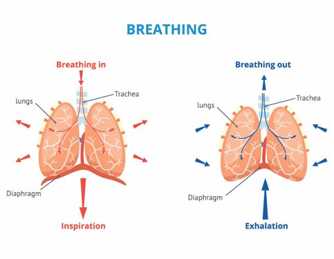
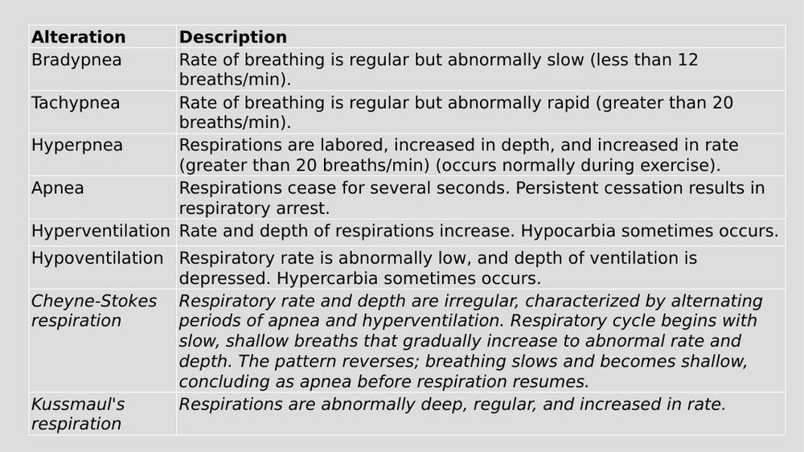
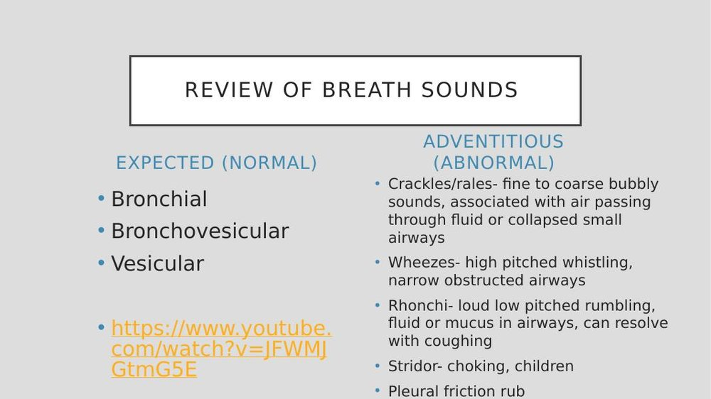
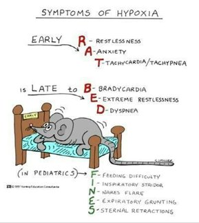
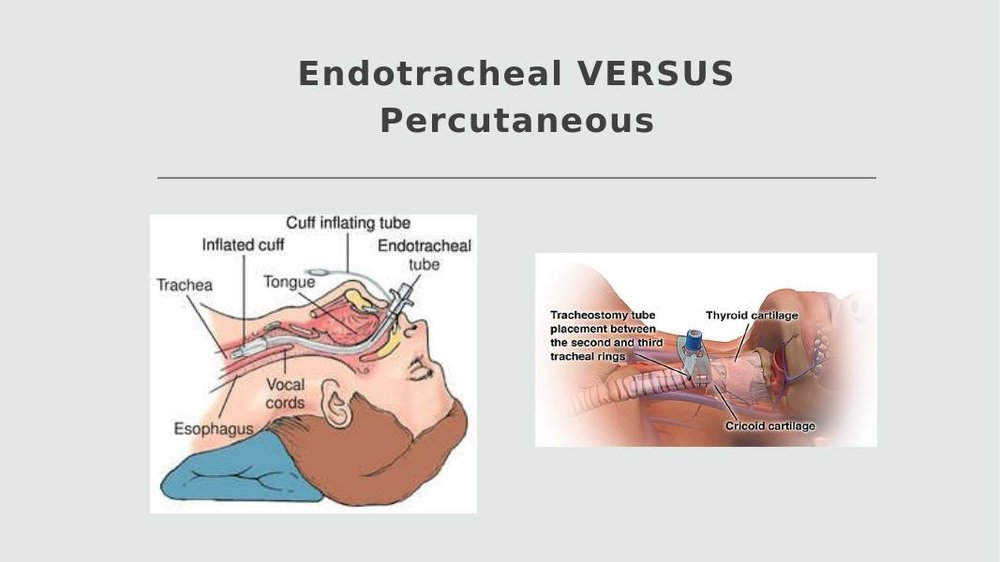
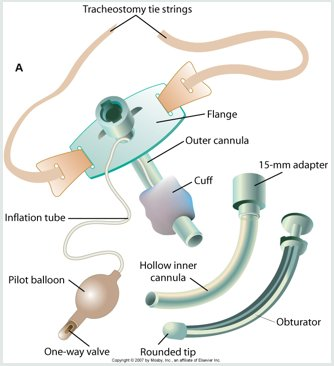
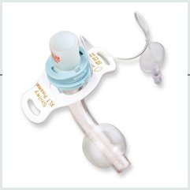
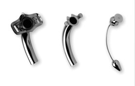
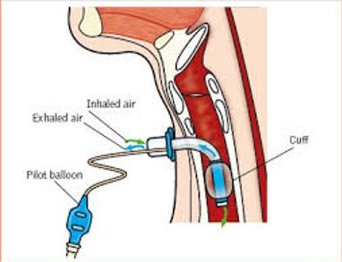
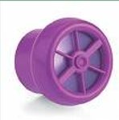

Fundamentals Review · Topic 4
Oxygenation & Tracheostomy
A large unit — 5 oxygenation lectures plus an intro to tracheostomies, combined into one page. Covers the mechanics of breathing, how to assess it, hypoxia, oxygen therapy devices, and the basics of tracheostomy care.
Ventilation, Diffusion & Perfusion

- Ventilation: movement of gas in and out of the lungs. Diffusion: the O2/CO2 exchange between the alveoli and red blood cells. Perfusion: distributing that newly oxygenated blood to body tissues.
- Breathing rate/depth is driven by blood O2, CO2, and pH — rising CO2 signals the body to increase rate and depth to remove it faster.
- Tidal volume is the amount of air exhaled following a normal inspiration. Lung volumes are determined by age, gender, and height; tidal volume itself is influenced by health status, activity, pregnancy, exercise, obesity, and obstructive/restrictive lung disease.
- Alveoli are where gas exchange actually happens — when oxygenation goes wrong, ask whether the problem is at the alveolar level or somewhere else.
Assessing Breathing: Rate, Depth & Pattern

- Normal respiratory rate: 12–20/min. Also assess depth and rhythm — shallow breathing, or a rate outside 12–20, is abnormal.
- Stress and exercise normally increase rate/depth (increased work of breathing) — but this should return to baseline once the exertion stops. A respiratory rate that stays elevated is a cue something is wrong; a rate greater than 27 increases the risk of cardiac arrest.
- Normal variation: infants/children breathe faster than adults. Males and children tend to use abdominal muscles more when breathing; females tend to use more thoracic muscles.
Breath Sounds

| Sound | What It Means |
|---|---|
| Crackles / rales | Fine to coarse, bubbly — air passing through fluid or collapsed small airways (e.g. fluid overload). |
| Wheezes | High-pitched whistling — narrow/obstructed airways (asthma, allergic reaction). Note whether inspiratory, expiratory, or both when charting. |
| Rhonchi | Loud, low-pitched rumbling — fluid or mucus in the airway. Often resolves with coughing — reassess after the patient coughs. |
| Stridor | Associated with choking, or seen in children. |
| Pleural friction rub | From inflammation of the pleural space. |
Oxygen Saturation & Diagnostic Tests
- SpO2 (peripheral — measured with a probe via light transmission) vs. SaO2 (arterial measurement). Normal is 95–100%. A provider may prescribe a different target for a patient with chronic lung disease (e.g. keeping an obstructive-disease patient around 93%) — know your patient's specific order.
- Pulse ox readings can be thrown off by movement, fingernail polish, or cold fingers — if a reading doesn't match how the patient looks, troubleshoot the probe/site, but always assess the patient, not just the number.
- Sputum studies: a negative culture is normal. Culture and sensitivity identifies the organism and its antibiotic sensitivities — ordered if a patient isn't improving on empiric antibiotics. AFB (acid-fast bacillus) tests for TB and requires collection on 3 consecutive days. Cytology screens for lung cancer. Best collected first thing in the morning (secretions have pooled overnight) and 1–2 hours after eating, using a sterile container.
- Pulmonary function tests (PFTs): basic ventilation study — amount and speed of air inhaled/exhaled. Peak flow: measures airway resistance, especially in asthma. Bronchoscopy: camera down into the lungs (patient usually sedated) — normal is no masses, pus, or foreign bodies; can also obtain a sample. Lung scan: looks for masses (size, location).
Work of Breathing & Factors Affecting Oxygenation
- Work of breathing = effort to move air in/out. Inspiration is active; exhalation is passive, relying on the lungs' elastic recoil. Surfactant maintains alveolar surface tension and prevents collapse — patients with certain pulmonary diseases have less surfactant and can develop atelectasis (alveolar collapse, preventing gas exchange).
- Work of breathing depends on rate/depth, accessory muscle use/nasal flaring, compliance (how easily the lungs expand), and airway resistance. Decreased compliance + increased resistance + accessory muscle use = increased work of breathing.
- Factors that reduce oxygenation: decreased O2-carrying capacity (not enough hemoglobin/RBCs); carbon monoxide poisoning (hemoglobin binds CO instead of O2 — a functional anemia); hypovolemia (reduced circulating volume → tissue hypoxia); decreased inspired O2 concentration (e.g. high altitude); hypoventilation/airway obstruction; increased metabolic demand (exercise, fever, wound healing); reduced chest wall movement (pregnancy, obesity, musculoskeletal disease, rib fractures/pain, neuromuscular disease like myasthenia gravis or Guillain-Barré); and CNS/spinal cord trauma affecting the phrenic nerve.
- The phrenic nerve controls the diaphragm — classically remembered as arising from C3, C4, C5 ("C3, 4, 5 keeps the diaphragm alive"). The lecture audio referenced "T3 to T5" for this, which doesn't match standard anatomy teaching — worth double-checking against the slide deck; this page uses the standard C3–C5 teaching.
Hypoxia — Signs, Symptoms & Chronic Changes

- Hypoxia = inadequate tissue oxygenation at the cellular level. Untreated, it can cause cardiac dysrhythmias (the heart needs oxygen too).
- Restlessness is a huge, early cue — a restless patient is never a good sign. Other signs: inability to concentrate, decreased LOC, dizziness, behavioral changes, difficulty staying still or lying flat, feeling "air hungry," orthopnea (needing to sit up to breathe), fatigue, agitation, increased pulse/respirations, and initially increased BP (which later drops toward shock as hypoxia worsens).
- Cyanosis (blue discoloration) is a late and unreliable sign of hypoxia. Central cyanosis (tongue, soft palate, around the eyes) indicates true hypoxia. Peripheral cyanosis (extremities, nail beds, earlobes) is usually a vasoconstriction problem, not an oxygenation problem.
- Chronic hypoxia (e.g. COPD, cystic fibrosis) produces visible changes over time: cyanotic nail beds, sluggish cap refill, clubbing of the fingers, and barrel chest — a normal anteroposterior-to-transverse chest ratio is about 1:2, but in chronic hypoxia it approaches 1:1.
- Lifestyle/developmental factors: smoking and vaping (encourage cessation; also watch for secondhand smoke exposure), obesity, air pollution, malnutrition (weakens the patient), sedentary lifestyle (exercise is protective), substance use, and occupational exposures (e.g. coal mining, chemical inhalants). In older adults, mental status change is often the first sign of a respiratory problem — they have lower reserve and can deteriorate quickly.
Airway Clearance: Cough, Secretions & Positioning
- Dyspnea is a subjective sensation of difficult/uncomfortable breathing. Ask: does it return to baseline after exertion? DOE = dyspnea on exertion. Have the patient rate it on a 0–10 scale, and compare to their normal baseline.
- Cough is a key assessment: frequency, productive (sputum present) vs. non-productive (dry — often allergies, asthma, GERD, post-nasal drip), sputum characteristics (bloody = hemoptysis, thick/thin, odor), chronic vs. acute, and strong vs. weak.
- Coughing is the most effective way to clear secretions — better than suctioning. Adequate hydration thins secretions so they're easier to move. A deep breath before coughing helps trigger it. Manage pain (e.g. after chest/abdominal surgery) so the patient is willing to cough — teach splinting (a pillow or folded blanket held against the incision) if coughing hurts.
- Mobilization: get the patient up and moving — it promotes lung expansion and gas exchange, and is one of the biggest factors separating a short recovery from a long one.
- Positioning: sitting up is the best position to reduce shortness of breath (expands the thoracic cavity). Change position frequently — helps prevent atelectasis, mobilize secretions, and avoid skin breakdown.
- Chest physiotherapy (requires an order, not independent nursing action) mobilizes thick secretions via postural drainage, chest percussion, and chest vibration (often via a vest). Postural drainage principle: lay on the unaffected side to promote drainage of a specific lobe — e.g. right lower lobe infiltrate → position the patient on their left side, in Trendelenburg. Contraindicated in pregnancy, rib/chest injury, increased ICP, recent abdominal surgery, bleeding disorders, or osteoporosis.
- Suctioning is a sterile procedure (oral, nasotracheal, or by respiratory therapy) used when a patient can't cough effectively — keep each pass under 10 seconds; consider pre-oxygenating first.
- Incentive spirometer: promotes lung expansion through deep breathing, helps prevent/treat atelectasis. Make sure post-op patients actually know how to use it correctly (a common gap) and have one ordered at the bedside.
Oxygen Therapy Devices
- FiO2 = fraction of inspired oxygen. Room air is 21% FiO2 — supplemental oxygen delivers higher than that.
- Requires a healthcare provider order except in an emergency (get an order after the fact). Follow the rights of medication administration — verify the flow rate at the wall matches what's ordered. Application can be delegated to a nursing assistant, but assessment, evaluation, and teaching cannot be delegated.
- Safety: oxygen is highly flammable — no open flames, candles, or smoking; consider an "oxygen in use" sign.
| Device | Flow / FiO2 | Notes |
|---|---|---|
| Nasal cannula | 1–6 L/min → ~24–44% | Safe, well tolerated, but FiO2 varies. Skin breakdown risk at cheeks/ears/nose. Tubing dislodges easily. Humidify if >4 L. |
| Simple face mask | 6–12 L/min → ~35–50% | Best for short periods or transport. Avoid with claustrophobia or aspiration risk. Watch for skin breakdown and don't let the patient eat with it on. |
| Partial rebreather | 6–11 L/min → ~60–75% | Middle-ground device, not commonly used in practice. Reservoir bag should stay partially inflated; no flaps on the mask. |
| Non-rebreather | 10–15 L/min → ~80–95% | For critical patients, often a step before intubation. Has one-way valve + flaps preventing rebreathing of exhaled air. Needs hourly (or more) assessment. |
| Venturi ("Vinnie") mask | 4–12 L/min → ~24–60% | High-flow device — delivers a precise FiO2 via color-coded valves. Best for patients (e.g. chronic lung disease) who need tightly regulated, constant oxygen concentration. |
| Face tent | — → ~24–100% | Loose-fitting aerosol mask, common in post-op patients — provides humidity, essentially a "blow-by." |
| High-flow nasal cannula | Up to 100% | Precise, high-flow delivery — for critical patients. |
Reservoir bag flaps are the visual cue: a non-rebreather has flaps on the exhalation ports; a partial rebreather does not. Humidification is used any time supplemental oxygen exceeds 4 L/min or runs longer than 24 hours, to prevent drying mucous membranes.
Tracheostomy — Overview, Indications & Tube Types

- An endotracheal (ET) tube goes through the mouth — used when a patient is on a ventilator. A tracheostomy bypasses the mouth/nose entirely through a surgically made opening (stoma) in the neck; a patient can be ventilated through either.
- Indications: acute airway obstruction, airway protection (e.g. after neck/throat/cancer surgery), facilitating secretion removal (e.g. after a stroke with weak/ineffective cough), and prolonged intubation (roughly 7–10 days — beyond that, airway damage risk increases and a trach is more comfortable and can help wean off the ventilator).
- A trach can be temporary or permanent — reassure concerned family members of this. Removing it is called decannulation.

| Shiley | Jackson |
|---|---|
| Plastic, disposable inner cannula | Metal, reusable inner cannula (cleaned, not replaced) |
| Has a cuff | No cuff |
| Sizes typically 6 (smaller/petite) or 8 (more common) | Sized the same way as Shiley |
| Used more commonly in the hospital setting | Used for longer-term/permanent trachs |


The obturator (rounded-tip guide used only during insertion, then immediately removed) should always be kept at the bedside — if the trach becomes dislodged, it's needed to reinsert the outer cannula safely.
Tracheostomy — Cuff Management & Communication

- The cuff creates a snug seal in the trachea — prevents aspiration and lets the ventilator deliver full breaths without air leaking around the tube.
- Inflated: when the patient is mechanically ventilated, or specifically ordered (e.g. inflated with meals). Deflated: the default on a med-surg/progressive-care floor — check the pilot balloon on assessment to tell which state it's in.
- Cuff inflation/deflation is managed by respiratory therapy, not the student nurse — as a student you only observe. The steps (if you observe): suction the mouth first (secretions sitting on top of the cuff could be aspirated once it deflates) → deflate the cuff → suction the trachea.
- Overinflation risks: increased mucosal pressure → ischemia, cartilage softening/erosion, and even a tracheoesophageal fistula.
- Communication: a passive mirror valve (Passy-Muir-style speaking valve) requires the cuff to be deflated to use, and requires a provider's okay. Not all patients tolerate it — it can cause anxiety or feelings of respiratory distress. Speech/respiratory therapy is typically present for the first use to teach the patient and watch for signs of distress.

Tracheostomy — Nursing Care & Emergency Response
- Nursing problems: ineffective airway clearance (secretions/plugging), impaired verbal communication, risk for infection (the stoma is direct access to the lower airway), impaired swallowing, body image disturbance, anxiety, and pain (especially with a new trach).
- Assessment: tube type and size, cuff status (inflated/deflated), patient comfort/pain, and oxygenation status generally. Trach care is typically done every 12 hours; suctioning as indicated (more often if needed).
- Keep at the bedside: the obturator, and spare trach tubes — one the same size as the patient's current tube, and one a size smaller (in case of swelling/edema).
- If the outer cannula/whole tube comes out: (1) insert the obturator into the replacement outer cannula, (2) extend the patient's neck and open the stoma, (3) insert the outer cannula (with obturator inside) into the stoma, (4) immediately remove the obturator, (5) assess the patient and lung sounds, (6) secure the new trach ties.
- Accidental decannulation most often happens during coughing or patient transfers — checking that the trach ties are secure is part of every room assessment.
Self-Test Flashcards
Click a card to flip it and check your answer.
Practice Questions
All 20 Must Know + Extra Practice questions for this section, pulled from the same bank as Build Your Own Exam. Answer each, then submit to see your score and rationales.